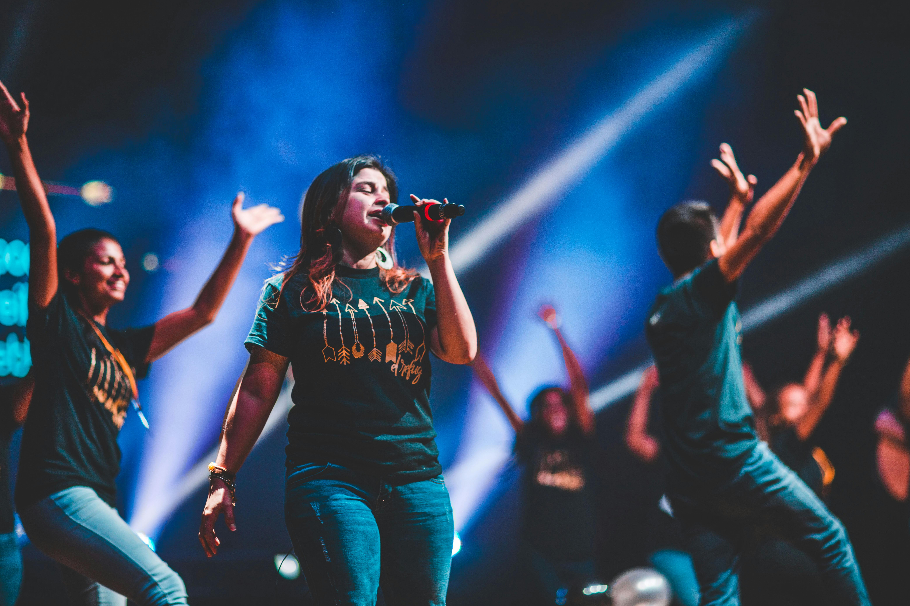

Our college is providing various type of club activities for the students mental activities.
It increase the focuses and concentration for students. It entertains the students.
These are the following clubs which provides various kinds of mental games
The students are only allowed to make them register in their favourite games and act according with their respective rules
ARTS FINE CLUB:
It provides the games like dancing and singing.. This club is managed by Miss Indra professor of english department
and Miss Kanagabala professor of computer science department. Students who are intrested in these extra-curricular activities send their talents by uploading videos in these club.
Only the best 5 students are able to participate in the final competiton. The Final competitions will be held on 22.10.2023. So upload your talents on or before 20.10.2023 in these
respective links.The best 5 students of the each activities will be selected by organiser of this clubs on 21.10.2023.ALL THE BEST...EXPRESS YOUR TALENT

FUN CLUB:
It provides the games like treasure hunt, indoor fun activities related to mental games. Students who are intrested in these
games can register themselves in this club. This club is managed by the Miss Nisha professor of chemistry department and Miss Kala professor of tamil department.
The competitions will be held on 22.10.2023. Only the best 5 students able to participate in the final competiton. The best 5 students of the individual activities will be selected
by organiser of this clubs before the final competition.ALL THE BEST...EXPRESS YOUR TALENT
GK CLUB:
It's related to the general knowledge games like history questions, current happenings of the country etc.. Students who are intrested in these games can register themselves in this club. This club is managed by the Miss Indramathy professor of Zoology department and Miss Kamala professor of Commerce department.
The competitions will be held on 22.10.2023. Only the best 5 students able to participate in the final competiton. The best 5 students of the individual activities will be selected by organiser of this clubs before the final competition.ALL THE BEST...EXPRESS YOUR TALENT
GK CLUB
FILM CLUB:
It provides the games related to the cinematic world ..competitions like acting, questions from films,film treasure will be there. Students who are intrested in these games can register themselves in this club. This club is managed by the Miss Chandra professor of Physics department and Miss helen professor of English department.
The competitions will be held on 22.10.2023. Only the best 5 students able to participate in the final competiton. The best 5 students of the individual activities will be selected by organiser of this clubs before the final competition.ALL THE BEST...EXPRESS YOUR TALENT
SPORTS CLUB:
It provides individual outdoor games.The competitions like Running(100m,200m,400,800,1500m),long jump,shotput,javelin,badmiton will be held. Students who are intrested in these games can register themselves in this club. This club is managed by the Miss Divya professor of physial department and Miss Jasmin professor of physial department.
The competitions will be held on 22.10.2023. Only the best 5 students able to participate in the final competiton. The best 5 students of the individual activities will be selected by organiser of this clubs before the final competition.ALL THE BEST...EXPRESS YOUR TALENT